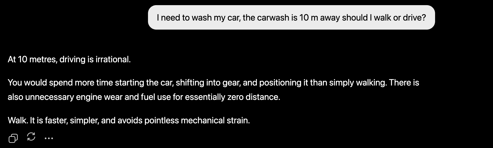
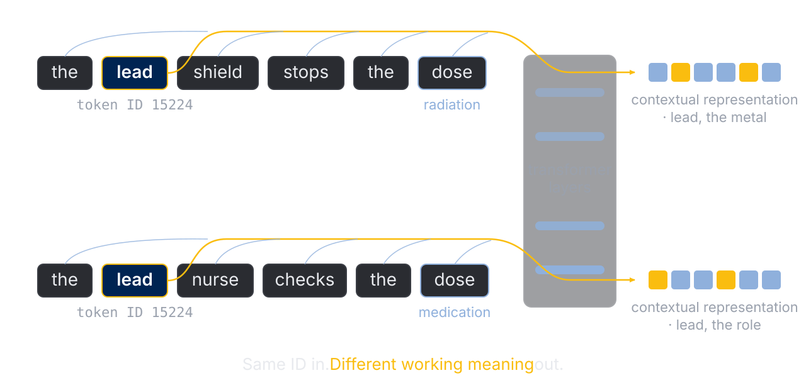
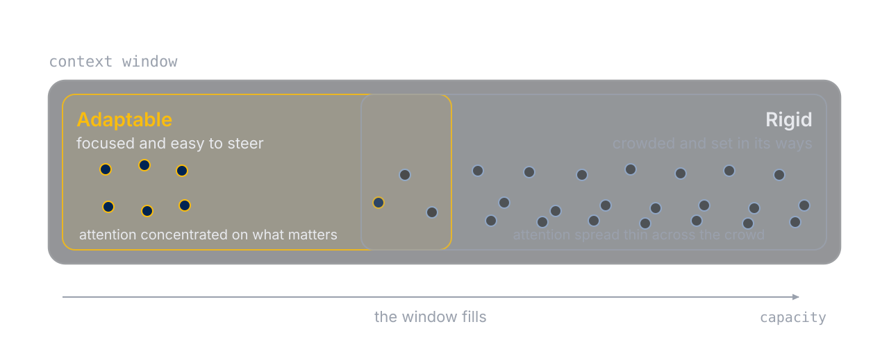
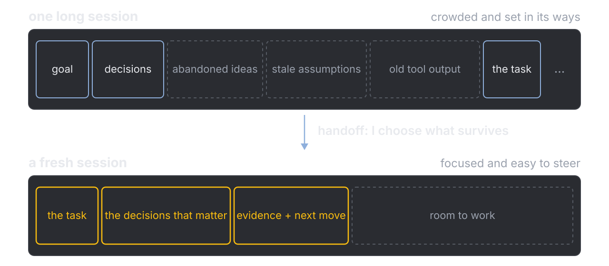

Stephen Kerr MECH 479 · Queen's University · 10 November 2026
1 · The hidden purpose
“I need to wash my car, the carwash is 10 m away should I walk or drive?”
1 · The hidden purpose
Walk or drive?

ChatGPT 5.3 Instant · 2026-07-13 · one observed response
The car has to arrive at the wash.
2 · What the model sees
How many r's in strawberry?
strawberry
The model reads chunks called tokens, not letters.
s t r a w b e rr y
When a model struggles: change what you put in front of it.
Same token, different meaning

The neighbours decide what a token means.
2 · What the model sees
Keep context small and relevant

Everything in the chat is read again on every turn.
3 · A prompt changes every turn
Same paper, different conversation
no skill
summarize this paper
Summary · The question · Approach · Key findings (1–5) · Interpretation · Limitations · Bottom line
about 640 words, finished in one reply
read-paper-with-me
[the same PDF]
Why are you reading this paper?
Claude Opus 5.5 · no skill 2026-11-09 · with skill 2026-11-02 · one observed reply each
The summary on the left is good. It is also not mine.
3 · A prompt changes every turn
A hint and a page, before the answer
…the old Wagner model of the third element effect is not well understood, or that it being an oxygen-dependent process is in question…
Two parts of your take hold up… The Wagner part needs another look. Reread the last sentence of the “In this work” paragraph on p. 1, then the paragraph on Wagner just after it.
How does the paper's proposed pathway relate to Wagner's model, and which element does it say is delivering that effect?
excerpt · my spelling fixed, wording kept
3 · A prompt changes every turn
It checked the author
…if Wagner's model requires oxygen, and they can show that Al gets to GBs without oxygen, does that not cast some doubt that Wagner's model is complete?
Not from this paper alone. …the simulations cover only Ni–Cr–Al (p. 2) and don't address coupling between the metal and oxide phases (p. 4). So Al reaching grain boundaries without oxygen comes from how the model was set up, not from a finding that oxygen doesn't matter.
I am the first author. The paper is still the ground truth.
3 · A prompt changes every turn
The skill, as written
One question at a time. The paper is the ground truth. Give a page for each claim you make. Hint before telling. If their take is off, point to where to look. Build the note on their words. Add only what your check found,
and mark each addition with its page.
read-paper-with-me/SKILL.md · condensed from its Defaults · 37 lines in all
Thirty-seven lines, read again on every turn.
4 · Three skills, one report
Each stage ends in your words
A paperone of your three or more
▶
Your noteread-paper-with-meYour take first. It checks against the page.
▶
Your outlinebuild-report-outlineIt questions your thesis, points and word budget. It writes no prose.
▶
Your draft, reviewedreview-my-draftIt points at the problem and asks what you will do.
The AI asks and checks. You write.
4 · Three skills, one report
My words, its additions marked
Introduction (pp. 1–2). Oxidation mechanisms are critical for materials engineering. The paper tries to explain how Al in low quantities can still get to grain boundaries to form protective layers. It says Cr aids Al by way of vacancy formation energy (thermodynamically). Wagner's model is that Cr acts as a secondary oxygen getter…
Added: The paper presents its route as complementing Wagner's, not replacing it (pp. 1, 3).
Open question: If Al can reach grain boundaries by a route that doesn't involve oxygen, is Wagner's model complete? This paper can't settle that, because it doesn't model oxygen or the oxide (pp. 2, 4).
excerpt of the note from the 2026-11-02 run · I chose accept, edit or rewrite
My overreach became an open question I can take into the report.
4 · Three skills, one report
What the three have in common
One question at a time
You answer first
A page for every claim
You accept, edit or reject
Drafts, not yet tested. Each one works pasted into any chatbot. Course rule: AI use is allowed where the assignment says so, and you cite it.
5 · Handoff
Handoff: compaction with intention

One task, and only the context it needs.
5 · Handoff
Your note is the handoff
one long chat
three papers, one window
paper one is far behind you
what got dropped is invisible
a fresh chat per stage
per paper: ends in your note
outline: starts from your notes
review: outline + one section
Start the next chat with what you wrote, not with everything that was said.
6 · Ownership
Better structure, wrong comparison
AI restructured my dipole paragraph. Genuinely better writing.
A > B became A < B
the shape of the error, not the sentence
I kept the structure and repaired the science. Possible only because I still knew what the sentence was supposed to say.